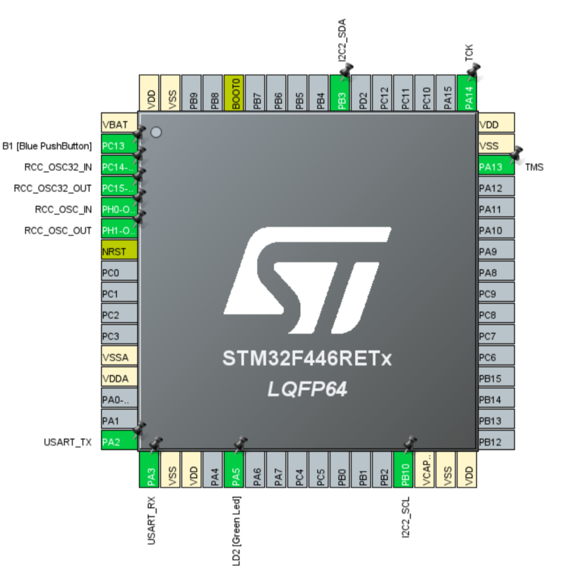

STM32資料 応用編 2
センサーの値を読んでみよう
今回はICM45686という加速度と角速度の値を取ることができるセンサーを使う
今回やること
作業の流れ
- ピンを割り当てる
- 必要なファイルを追加し、wrapper.cppにコードを書き込む
- ICM45686とSTM32を配線でつなぐ
- STM32にプログラムを書き込み実行する
ピンの割り当て
今回はI2Cという機能を使います
PB10とPB3にI2C2のSCL（クロック線）とSDA(データ線)を割り当てよう
回路
ICM45686とSTM32をつなぎます
6本の配線を画像の位置に繋いでね
配線図
| 用途 | STM32 | ICM45686 |
|---|---|---|
| クロック線 | D6(PB10に対応) | CN1_16 |
| データ線 | D3(PB3に対応) | CN1_18 |
| 5V線 | 5V | CN1_19 |
| GND線 | GND | CN1_13 |

プログラム
今回は、事前に作成してある通信用のライブラリを使ってもらいます
・ライブラリのリンク
ここから、OO.hのファイルをCore/IncにOO.cppのファイルをCore/Srcにコピーしよう
OO.hやOO.cppはなんのファイル？
難しい話なので、今はコピペで動けば大丈夫!
C++のクラスという機能を使っていて、管理をしやすくするためにファイルを分割しています
| ファイル名 | 用途 |
|---|---|
| ICM45686_HAL.cpp | センサーと通信するためのI2C関数の定義 |
| ICM45686_HAL.h | ICM45686_HAL.cppに登録されている関数などの管理 |
| ICM45686.cpp | 定義した関数を使って設定や値取得をする関数の集まり |
| ICM45686.h | ICM45686.cppに登録されている関数などの管理 |
例えば、I2C通信の関数はこれであるが
HAL_I2C_Mem_Read(&hi2c2, I2C_ADDR, REGISTER, 1, &receive_data, 1, 10);使うピンや相手のセンサーや待機時間は同じでいいので、同じ部分は直接入力したり、変数を使ったりして上書きのようなことをしている
void ICM45686_HAL::read(ICM45686_HAL::REGISTER REGISTER_ADDR, uint8_t* receive_buffer, uint8_t len){
HAL_I2C_Mem_Read(i2c_pin, I2C_ADDR, uint8_t(REGISTER_ADDR), 1, receive_buffer, len, 1000);
}これによって、ICM45686と通信をするときは短い関数を使ったり、指定したピンの番号を自動で入力してくれたりできる
I2Cアドレスなどを変えるだけで他のセンサーにも使いまわせるので、汎用性の高いプログラムにすることができる
サンプルコード
先ほどのリンク先のサンプルコードと同じコードです
実行してTeraTermで受信したデータを読んでみよう
send_data(gyro_data)とsend_data(accel_data)は片方ずつの方が読みやすいと思います
#include "ICM45686.h"
#include "usart.h"
#include "string"
ICM45686 icm(&hi2c3);
int16_t gyro_data[3];
int16_t accel_data[3];
void send_data(int16_t data[3]);
void init(){
//センサーとの通信チェック
icm.verify_connection();
//加速度センサーの設定
icm.accel_mode(icm.mode::low_noize, icm.accel_scale::scale_02g, icm.odr::rate_0800hz);
//角速度センサーの設定
icm.gyro_mode(icm.mode::low_noize, icm.gyro_scale::scale_0250dps, icm.odr::rate_0800hz);
}
void loop(){
//データの取得
uint8_t is_get = icm.get_data(accel_data, gyro_data);
//取得に成功
if(is_get == 0){
//データの送信
send_data(gyro_data);
//send_data(accel_data);
//判定のクリア
is_get = 1;
}
}
//PCへデータを送信する
void send_data(int16_t data[3]){
std::string str;
str = std::to_string(data[0]) + " " + std::to_string(data[1]) + " " + std::to_string(data[2]) + "\n";
HAL_UART_Transmit(&huart2, (uint8_t *)str.c_str(),str.length(),100);
}
終わりに
今回は、実際にセンサーの値を読んでみました！
次回は、取得したデータを使ってセンサーの傾きの状態を表示してみます